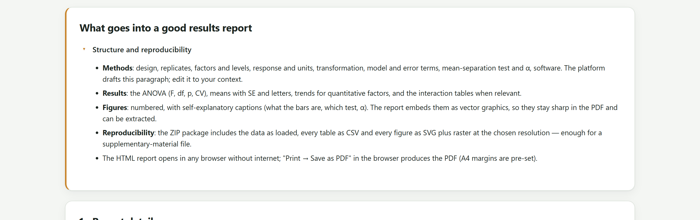
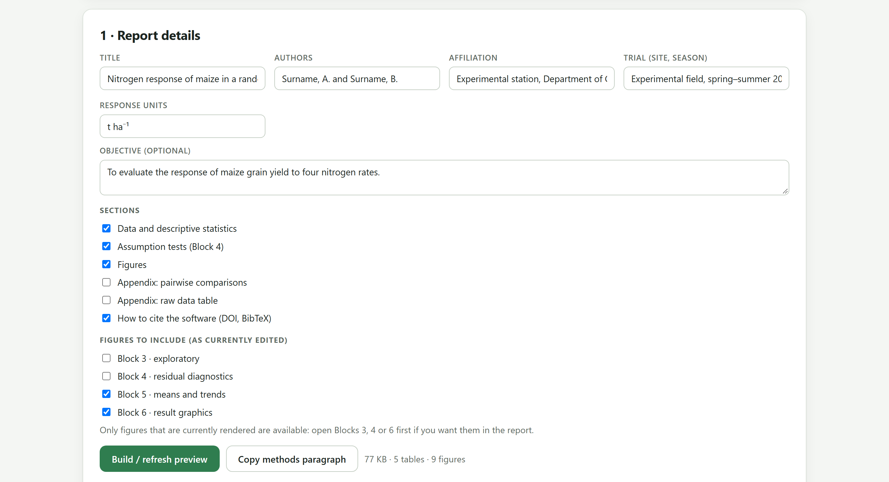
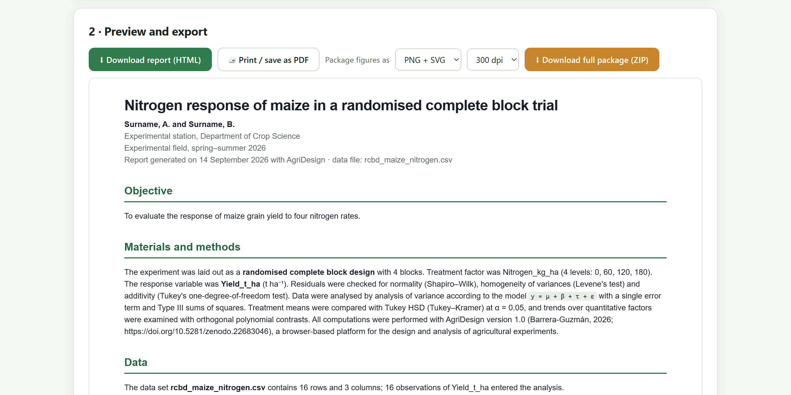
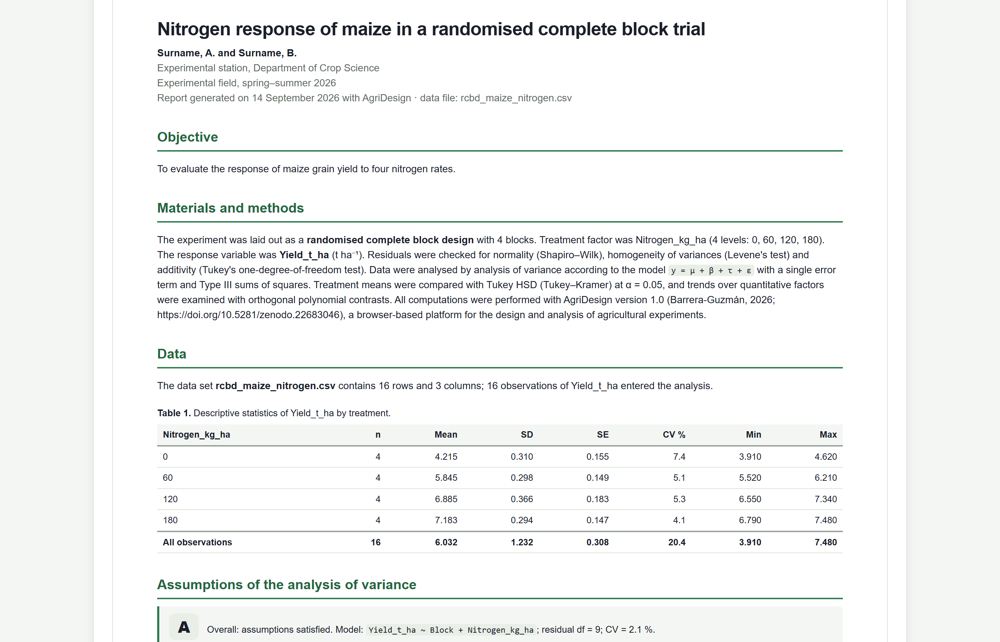
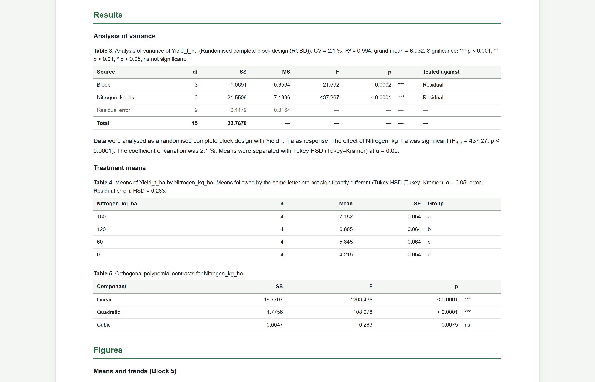
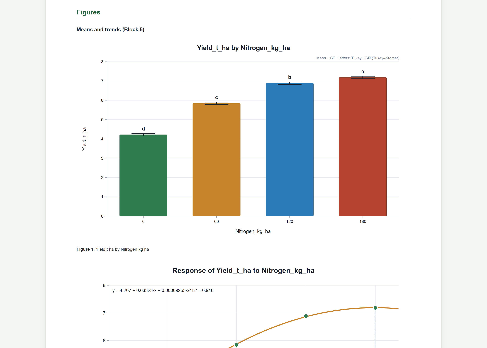
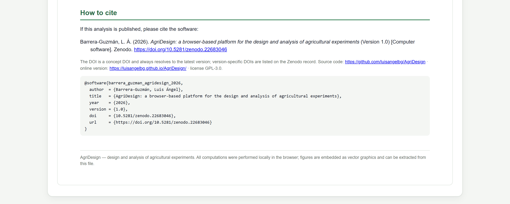

El último paso del análisis reúne todo en un documento. El Bloque 7 redacta un informe autocontenido con título, objetivo, materiales y métodos, datos, supuestos, tabla de ANOVA, medias con letras, contrastes, figuras tal como las editaste, apéndices y la cita del programa. Se descarga como HTML, se imprime a PDF y se empaqueta en un ZIP con los datos, las tablas en CSV y las figuras a la resolución elegida: material suplementario listo para la revista o para el comité de tesis.
El informe se construye con el análisis que está en pantalla en el Bloque 5 y, si se corrieron, con los supuestos del Bloque 4 y las figuras de los Bloques 3 a 6. No repite cálculos: toma los resultados tal como quedaron. Por eso el orden natural es terminar el análisis, pulir las figuras y solo entonces abrir el Bloque 7.

| Parte | Qué contiene | Origen |
|---|---|---|
| Encabezado | Título, autores, afiliación, ensayo, fecha de generación y nombre del archivo de datos. | Detalles del informe |
| Objective | El objetivo, si se escribió. | Detalles del informe |
| Materials and methods | Un párrafo redactado: diseño y repeticiones, factores con sus niveles, respuesta y unidades, covariables, transformación, revisión de supuestos, modelo, estratos de error, tipo de sumas de cuadrados, prueba de medias y α, contrastes polinomiales y la versión y el DOI del programa. | Bloques 2, 4 y 5 |
| Data (opcional) | Tamaño de la tabla, observaciones analizadas y estadísticos por tratamiento. | Bloque 2 |
| Assumptions (opcional) | La calificación, el modelo y la tabla de pruebas de supuestos. Solo aparece si el Bloque 4 se corrió con la misma respuesta. | Bloque 4 |
| Results | Tabla de ANOVA con su pie, el borrador de resultados del Bloque 5, medias con letras y la diferencia mínima, contrastes polinomiales y tablas de celdas de las interacciones. | Bloque 5 |
| Figures (opcional) | Las figuras de los bloques elegidos, numeradas, agrupadas por bloque y embebidas como gráficos vectoriales. | Bloques 3 a 6 |
| Appendix A (opcional) | Comparaciones por pares de cada factor, con diferencia, error estándar, estadístico y P ajustado. | Bloque 5 |
| Appendix B (opcional) | La tabla de datos completa tal como se cargó. | Bloque 2 |
| How to cite (opcional) | La cita del programa en formato APA, el DOI, el repositorio y la entrada BibTeX. | — |
Como la interfaz, el informe se redacta en inglés, el idioma de la mayoría de las revistas. El HTML descargado se abre y edita en cualquier procesador de texto (Word, LibreOffice) para traducirlo o adaptarlo; las tablas y figuras se conservan.
Al abrir el Bloque 7 con un análisis hecho, la app propone un título, construye la vista previa y muestra la tarjeta 1 · Report details. Si no hay análisis, aparece el aviso No analysis yet. Run Block 5 first.

1 2 3 4 5 6El informe toma las figuras que existen en la página en ese momento, con sus ediciones. Las del Bloque 3 se dibujan al abrir ese bloque; las del Bloque 4, al correr los diagnósticos; las del Bloque 6, al abrir la galería. Si una casilla de Figures to include no aporta nada, abre primero ese bloque y vuelve a pulsar Build / refresh preview. Al cargar otra tabla o cambiar los roles, las figuras y resultados anteriores se descartan y el informe vuelve a pedir el análisis del Bloque 5.
La figura de medias con letras se dibuja en el Bloque 5 y otra vez en la galería del Bloque 6. Con las casillas predeterminadas (Bloques 5 y 6) aparece dos veces en el informe. Para un informe más breve, deja solo Block 6 · result graphics, que contiene las cuatro presentaciones de las medias, la curva y la partición de la varianza.


«El experimento se estableció en un diseño de bloques completos al azar con 4 bloques. El factor de tratamiento fue Nitrogen_kg_ha (4 niveles: 0, 60, 120, 180). La variable de respuesta fue Yield_t_ha (t ha⁻¹). Se revisó la normalidad (Shapiro–Wilk), la homogeneidad de varianzas (prueba de Levene) y la aditividad (prueba de un grado de libertad de Tukey) de los residuales. Los datos se analizaron por análisis de varianza según el modelo y = μ + β + τ + ε, con un solo término de error y sumas de cuadrados tipo III. Las medias de tratamiento se compararon con la prueba de Tukey a α = 0.05, y las tendencias sobre factores cuantitativos se examinaron con contrastes polinomiales ortogonales. Todos los cálculos se hicieron con AgriDesign versión 1.0 (Barrera-Guzmán, 2026; https://doi.org/10.5281/zenodo.22683046).»
| Si el análisis tiene… | el párrafo añade… |
|---|---|
| bloques · fila y columna · ninguno | «with 4 blocks» · «with 4 rows × 4 columns» · «with 4 replicates per treatment». |
| unidades escritas en Response units | Las unidades entre paréntesis tras la respuesta. |
| covariables | «… was included as covariate (ANCOVA)». |
| una respuesta transformada en el Bloque 4 | La transformación, y que las medias se reportan destransformadas; el nombre de la respuesta sin el sufijo (_ln, _sqrt…). |
| diagnósticos del Bloque 4 con la misma respuesta | La revisión de normalidad, homogeneidad y, si hubo bloques, aditividad. Si el Bloque 4 no se corrió, la frase se omite: el informe no afirma revisiones que no se hicieron. |
| estratos de error (parcelas divididas, franjas) | «with the appropriate error strata» en lugar de «a single error term». |
| un factor cuantitativo con 3 o más niveles | La mención de los contrastes polinomiales ortogonales. |



La tarjeta de vista previa ofrece dos salidas directas y el Bloque 7 una tercera, pensada para el manuscrito.
| Botón | Qué hace | Para… |
|---|---|---|
| Download report (HTML) | Guarda un archivo HTML autocontenido con las tablas y las figuras dentro. Se abre sin internet en cualquier navegador. | Archivar el análisis, enviarlo, editarlo en un procesador de texto. |
| Print / save as PDF | Abre el informe en una ventana nueva y lanza el diálogo de impresión del navegador. Si el navegador bloquea ventanas emergentes, la app avisa: Allow pop-ups to print. | Un PDF para el asesor, el comité o el expediente. |
| Copy methods paragraph | Copia el párrafo de métodos, como texto, al portapapeles, y lo confirma con un mensaje verde. | Pegarlo en el manuscrito o la tesis. |
| Del informe… | al manuscrito… |
|---|---|
| Párrafo de métodos | A la sección de materiales y métodos, tras añadir lo que la app no sabe: localidad, suelo, manejo agronómico, tamaño de parcela y fechas. |
| Tabla de ANOVA | Resumida: F con sus grados de libertad y P de cada fuente, y el CV. La tabla completa, al material suplementario. |
| Medias con letras | A una tabla del artículo, con el pie que ya trae el informe (prueba, α, diferencia mínima). |
| Borrador de resultados | Como punto de partida; los nombres de columna se sustituyen por nombres legibles y se añade la interpretación agronómica. |
| Figuras | Desde el ZIP o la galería del Bloque 6, a la resolución de la revista (capítulo 7), no desde el PDF. |
| Apéndices y datos | Al material suplementario. |
Los pies de figura del informe repiten el título de cada figura; en el artículo se reescriben con la información de la tabla 7.1.
Download full package (ZIP) reúne en un solo archivo todo lo necesario para reproducir y publicar el análisis. Antes de pulsarlo se elige cómo empaquetar las figuras: PNG + SVG (predeterminado), TIFF + SVG, JPG + SVG o SVG only, a 300, 600 o 900 dpi. Mientras se prepara, el botón dice Packing….
| Contenido | Archivos | Nota |
|---|---|---|
| Informe y README | 2 | El informe ocupa unos 190 KB con todas las figuras. |
| Datos | 1 | CSV con separador de coma y punto decimal. |
| Tablas | 3 | ANOVA, y medias y comparaciones por cada factor de tratamiento. |
| Figuras | 42 | 21 figuras, cada una en SVG y en PNG. |
| Total | 48 | 5.8 MB. Tardó unos 23 segundos en generarse en un equipo de escritorio. |
Muchas revistas y repositorios de datos piden que el análisis se pueda reproducir. El ZIP ya lo permite: los datos originales, las tablas en un formato abierto, las figuras en vectorial y un informe que declara la versión y el DOI del programa. Súbelo tal cual como material suplementario, o a un repositorio como Zenodo junto con el artículo.
t ha⁻¹ en Response units y el objetivo.El informe es un reflejo fiel de lo que hiciste en los bloques anteriores: si falta un análisis, falta en el informe; si editaste una figura, entra editada. El párrafo de métodos describe solo lo que realmente se hizo y cita la versión del programa. El PDF sirve para leer y archivar; el ZIP, para publicar y reproducir.
Con el análisis publicado, el ciclo se cierra planeando el siguiente ensayo. El capítulo del Bloque 8 presenta el generador de diseños: la aleatorización con semilla, el croquis de campo, la libreta para capturar datos y el cálculo del número de repeticiones.